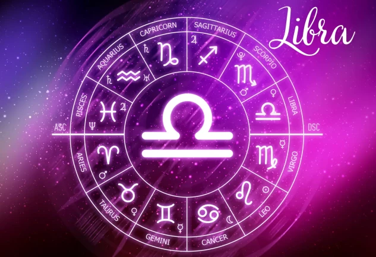
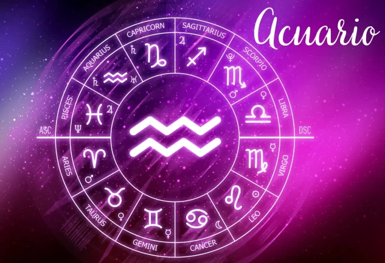

En astrología, Géminis es el tercer signo del zodíaco, el segundo
de naturaleza positiva y de cualidad mutable. Representa la
inteligencia y la comunicación. Pertenece junto a Libra y Acuario
al elemento aire. Está regido por Mercurio. Su signo opuesto y
complementario es Sagitario.
Géminis es un signo mutable que forma parte del elemento aire.
Como signo de los gemelos, tradicionalmente se asocia con una
personalidad versátil y cambiante. Su distintivo común es la
comunicación y el ingenio.

En astrología, Libra es el séptimo signo del zodíaco, el cuarto
de naturaleza positiva y el tercero de cualidad cardinal.
Simboliza el equilibrio y la armonía, y su símbolo representa
la balanza. Pertenece junto a Géminis y Acuario al elemento aire.
Está regido por Venus.
Tradicionalmente, Libra se relaciona con la búsqueda del
equilibrio, la justicia y la armonía en las relaciones.
También se asocia con la consideración de diferentes opiniones
y la resolución pacífica de conflictos.

En astrología, Acuario es el undécimo signo del zodíaco, el sexto
de naturaleza positiva y el cuarto de cualidad fija, junto con
Tauro, Leo y Escorpio. Pertenece junto a Géminis y Libra al
elemento aire. Su signo opuesto y complementario es Leo.
Acuario se relaciona tradicionalmente con la originalidad,
la independencia y el interés por las ideas humanitarias.
También se le atribuyen características como la creatividad
y el pensamiento intelectual.